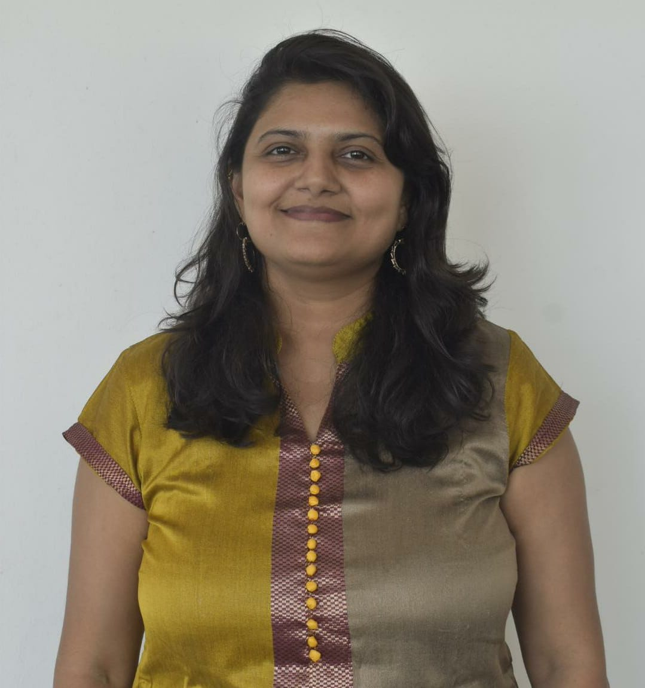
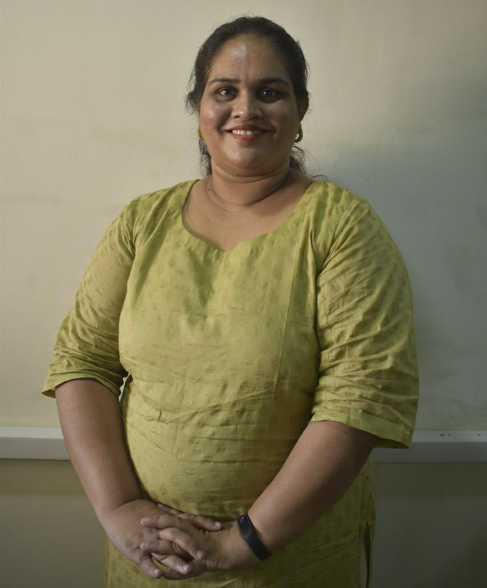

Alumni Committee
Dr Sapna Prabhu
Chairperson, CRCE Alumni Association
Alumni- Batch 1992
Ms. Prachi Patil
Secretary, CRCE Alumni Association
Alumni- Batch 2006

Ms. Parshvi Shah
Treasurer, CRCE Alumni Association
Alumni- Batch 2006
Members

Ms. Archana Lopes
Faculty Representative Electronics Engg. Dept.

Ms. Merly Thomas
Faculty Representative Computer Engg. Dept.

Mr. Hitendra Vaishnav
Faculty Representative Production Dept.

Mr. Farhan Shaikh
Works in Capegemini
Alumni- Batch 2011
Mr. Hardik Panchal
Works in Capgemini
Alumni- Batch 2012
Mr. Paresh Shetty
works in Idea Cellular
Alumni- Batch 1993
Mr. Suresh Balakrishnan
works in STULZ-CHSPL (INDIA) PVT. LTD
Alumni- Batch 1993